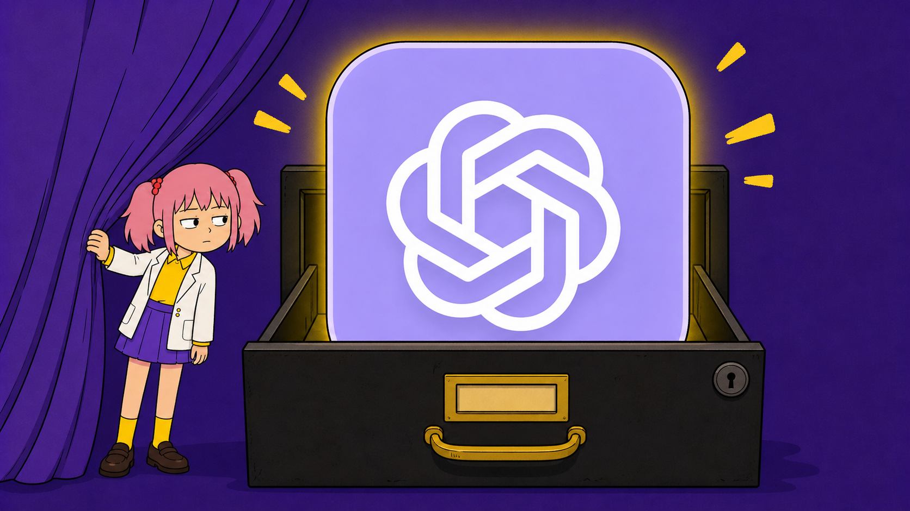
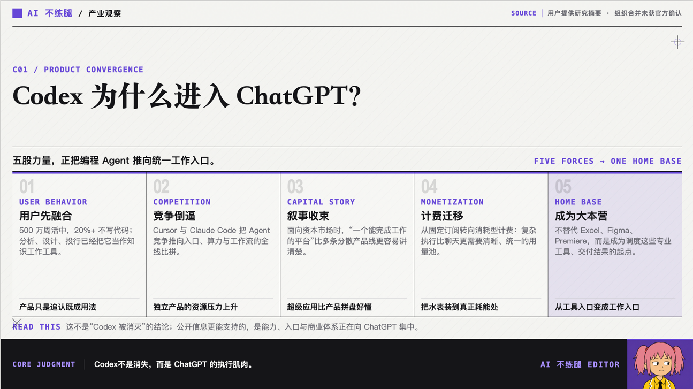
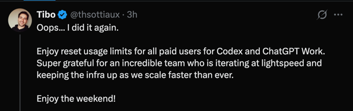

7月9日，OpenAI下线了独立的 Codex 应用，把代码执行和 Agent 能力放进 ChatGPT 桌面端。
新界面没有把 Codex 这个名字抹掉，而是分成了 Chat、Work、Codex 三种模式：聊天、交付工作、写代码，各留一个入口。
这之前，Codex 不是一个做不下去的边缘产品。
它的周活用户已经超过500万（截至今天已经超过900万），出乎我意料的是，过去超过100万的用户并不把它当编程工具用。
从2025年8月到2026年6月，个人用户中的非开发者增长了137倍，企业用户中的非开发者增长了189倍。
超过10%的用户每周至少会同时管理3个Codex Agent，26.6%的用户开始使用Skills，把复杂任务流程保存下来重复调用。
用户用脚投票，把一个 Coding Agent 投成了通用 Agent 了。
OpenAI 迭代的速度用做核弹来形容也不为过了。
2023年，OpenAI曾关闭第一代 Codex 模型，理由是通用 GPT 模型已经足以覆盖编码任务。
2025年4月，Codex 又以能读写本地文件、执行命令的 CLI Agent 形态强势回来。因为同年的 2 月 24 日，出生 Anthropic 同时发布了 Sonnet 3.7 和 Claude Code。
一个月后，云端版本进入 ChatGPT 侧边栏。到2026年2月，Codex 桌面应用发布时，周活已经突破200万。
五个月后，它不再拥有独立 App。
值得注意的是，在 2026 年 5 月，OpenAI 就将 ChatGPT、Codex、API 三条产品线合并为统一产品组织。Greg Brockman 正式主管产品战略，前 Codex 主管 Thibault Sottiaux 晋升领导核心产品与平台团队。
上过班的小伙伴都知道，组织墙的打通往往意味着更高的组织效率与执行力。

我看到小红薯上有玩家痛骂这次合并后的UI设计潦草难用，已经有人开始问候 OpenAI 的产品经理了。
但是如此大的动作，在几个月的时间内完成迭代，想必很难做到完美，AI产品的迭代也不需要等到菜都备好了再下锅，那样可能吃饭的人已经都被抢走了。
保留 Codex 模式，是为了让专业用户仍有清晰的工作台；把它装进 ChatGPT，则是为了让非程序员不会因为对代码的戒备而对产品望而生畏。
接下来值得咱们看的，肯定就是其他厂牌的 Coding Agent 将陷入何等疯狂的迭代更新，来抢占通用 Agent 的入口。

对了，这个周末，ChatGPT 的掌管重置的神，至少会重置一次，大家注意身体。